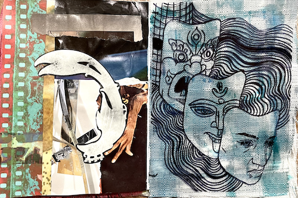

09092022
From the soil a spine sent forth,
sclera yellow, iris red,
sinewy anchor of flesh and bone,
set foot on a path of coal.
Embracing the abeyance,
awaiting Avalokitesvara,
I am yet to bear all my faces.

Back to home